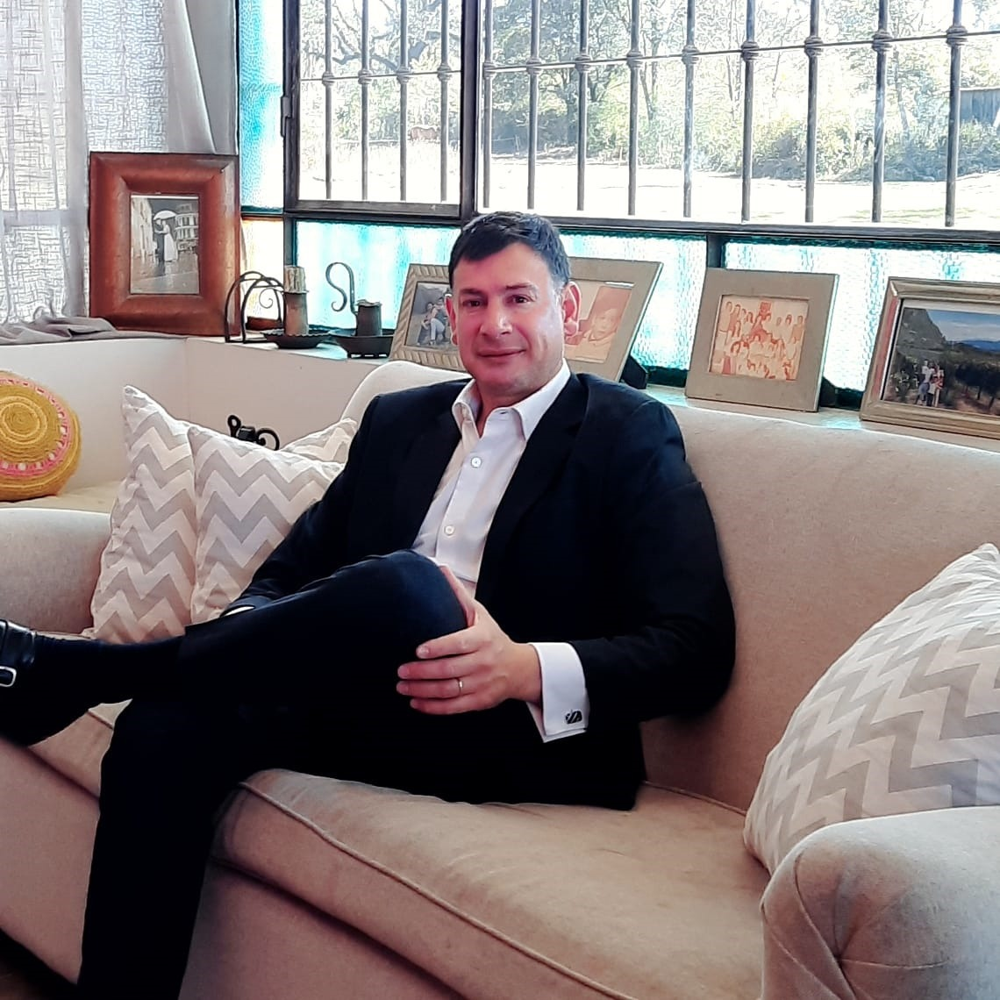

SERGIO RUIZ DE LOS LLANOS
ABOGADO

Su Titular
-

- Sergio Ruiz de los Llanos nació en la ciudad de Salta en el año 1978 y egresó del Colegio Belgrano de la ciudad homónima.
-
Título de Grado
- Abogado egresado de la Universidad Nacional de Tucumán (UNT).
-
Títulos de Posgrado, Diplomatura, Pregrado y Cursos
- Curso sobre Agenda Legal del Desarrollo Inmobiliaria dictado por el Dr. Agustín Pérez Cambiasso (Estudio Jurídico Nicholson & Cano) de la Escuela de Negocios de Real Estate 2023.
- Diplomatura Universitaria en Gestión Integral Minera con orientación en Litio de la Universidad Católica de Salta. Directora Dra. María C. Garros Martínez y Dr. Ricardo Alonso. 2023.
- Corredor Inmobiliario egresado de la Universidad Católica de Salta (UCASAL). 2020.
- Maestrando de la Maestría de Administración de Negocios - MBA- (Escuela de Negocios de la Universidad Católica de Salta - UCASAL).
- Curso de Posgrado Universitario de Actualización sobre el Nuevo Derecho Privado Argentino, dictado por la Facultad de Ciencias Económicas, Jurídicas y Sociales de la Universidad Nacional de Salta, la Escuela del Ministerio Público de Salta y la Caja de Seguridad Social para Abogados de Salta (120 horas). Directora Dra. Graciela Medina. 2016.
- Curso Taller - Teórico Practico de Derecho Procesal Laboral del Consejo Académico de la Escuela de la Abogacía para Graduados, dictado por el Dr. Roberto G. Loutayf Ranea. 2007.
- Curso Taller - Teórico Practico de Derecho Procesal Civil y Comercial del Consejo Académico de la Escuela de la Abogacía para Graduados, dictado por el Dr. Roberto G. Loutayf Ranea. 2007.
-
Experiencia Laboral
- Titular Estudio Jurídico.
- Asesor legal de la Secretaria de Tierra y Bienes del Gobierno de la Provincia de Salta.
- Docente en las cátedras de Teoría General de las Obligaciones y Derechos de Daños y de la Responsabilidad Civil de la Facultad de Ciencias Jurídicas de la Universidad Católica de Salta.
- Asesor legal del Foro de Intendentes de la Provincia de Salta (culminado).
Institucional
- Su titular es matriculado en el Colegio de Abogaos y Procuradores de la Provincia de Salta y cuenta con matrícula para el ejercicio profesional en el Fuero Federal.
- El estudio es socio de la Cámara de Comercio y Servicios de la Provincia de Salta.
Áreas de Práctica
-
Civil y Comercial
- Redacción de contratos ajustado a las necesidades de cada cliente.
- Recupero de activos (cobranzas judiciales y extrajudiciales).
- Procesos Sucesorios.
-
Litigios
- Asiste y defiende a diversos clientes en litigios referidos a:
- Prescripciones adquisitivas de dominio (Posesión Veinteañal).
- Responsabilidad civil por incumplimiento contractual o daños ocasionados por hechos ilícitos.
- Juicios reivindicatorios de dominio y demás acciones de derecho real.
- Juicio de Desalojo.
-
Real Estate
- Estructuración legal en negocios inmobiliarios.
- Estudio de Títulos.
- Administración de Propiedades.
- Asistencia legal en la compra y venta de propiedades.
-
Laboral
- Asiste a los empleadores asesorándolo en un correcto encuadre en la relación laboral de sus dependientes.
- Presta servicio de asesoramiento a los trabajadores brindándole las garantías establecidas por derecho del trabajo conforme Ley 20744 (Indemnizaciones, Accidentes de Trabajo ante Superintendencia de Riesgo de Trabajo).
- Asistencia letrada en los procesos judiciales y antes reclamos en la Secretaria de Trabajo.
-
Administrativo
- Brinda asistencia legal y técnica ante gestiones y trámites llevados a cabo en las diferentes reparticiones Gubernamentales, como ser ante la Secretaria de Medio Ambiente, Secretaria de Recursos Hídricos, Dirección General de Inmuebles, Secretaria de Tierras, Secretaria de Minería y Recursos Energéticos y Secretaria de Defensa del Consumidor.
Corresponsalías y Representaciones
- Inscripción de contratos societarios ante la Dirección General de Sociedades (constitución, inscripción, modificaciones, disolución y liquidación).
- Corresponsalía con abogados de los Distritos Judiciales del interior de la Provincia de Salta (Oran, Tartagal, Joaquín V. González, Metan y Cafayate).
- Corresponsalía con estudios jurídicos de las provincias de Buenos Aires, Tucumán y Jujuy.
- El estudio representa a personas físicas o jurídicas que deban actuar en la Provincia de Salta.